Las Mejores rutas en Bici
Hacer Rutas en bici con Ziklounir es una de las mejores formas de descubrir Colombia. Hemos seleccionado las mejores Rutas para que encuentres tu favorita y salgas a explorar.
Hacer Rutas en bici con Ziklounir es una de las mejores formas de descubrir Colombia. Hemos seleccionado las mejores Rutas para que encuentres tu favorita y salgas a explorar.
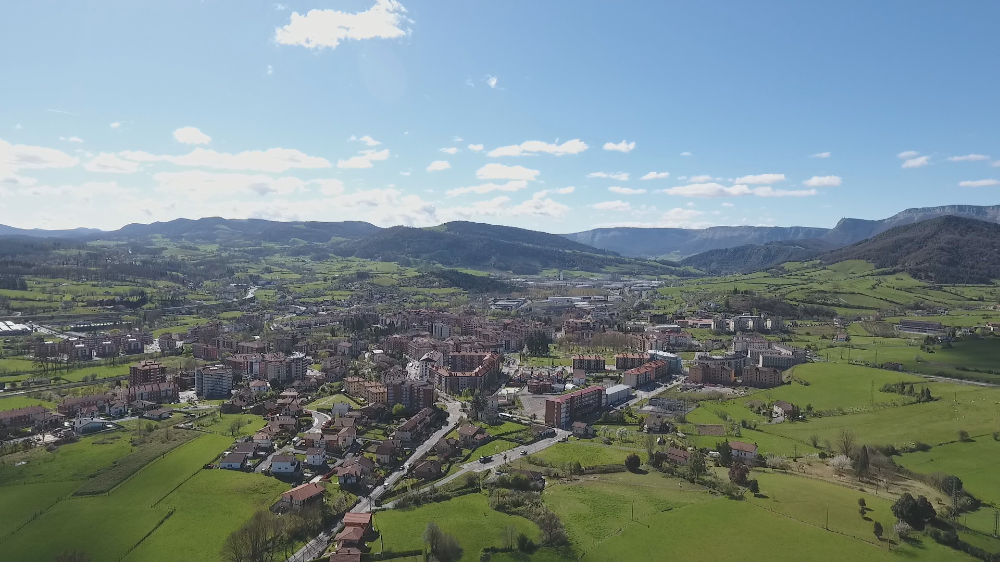
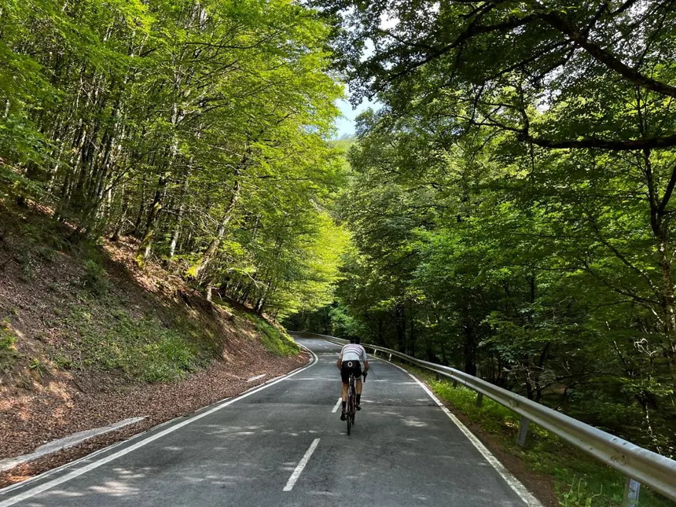
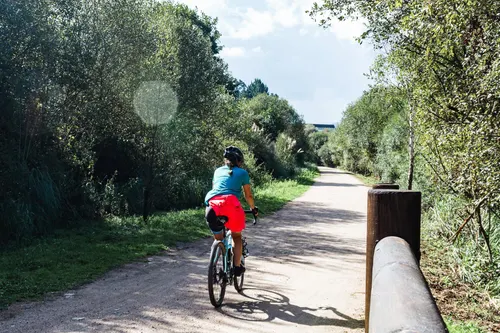
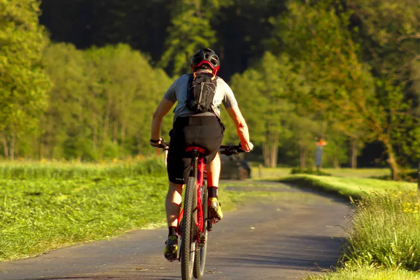
80.5km · 6-8 horas · 3,800m · 100m
Ruta de nivel épico. Se requiere una preparación física excepcional. Desde Mariquita hasta los 3,677 msnm, atravesando todos los pisos térmicos.
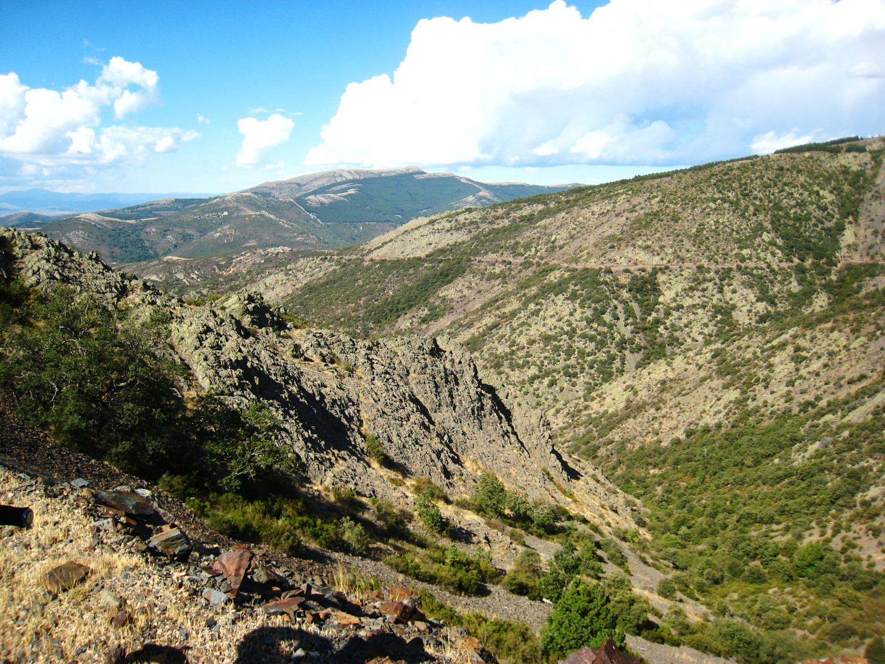
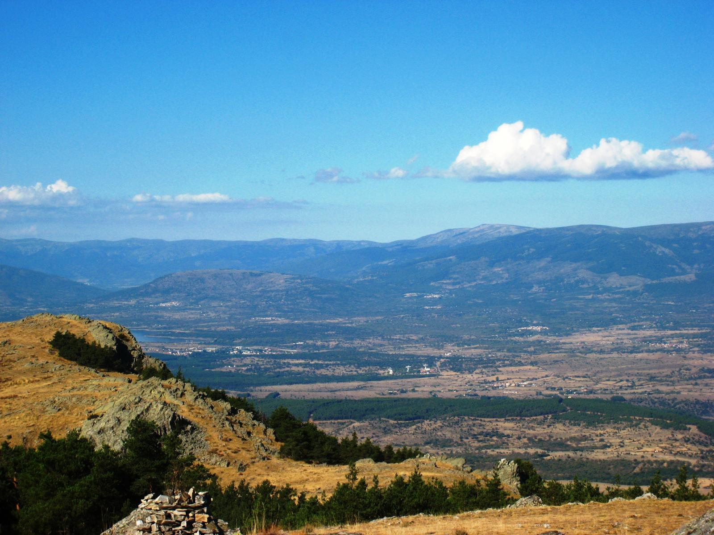
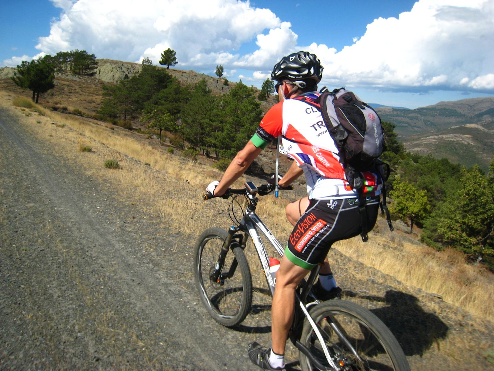
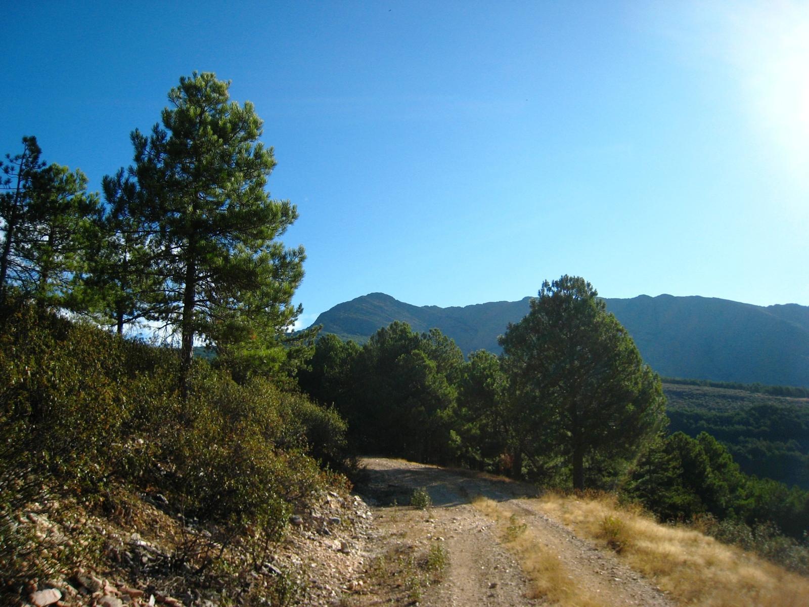
16,0 km · 1 hora 30 minutos · 1,000 m · 20 m
Ruta de nivel medio-alto. Muy popular entre los ciclistas de Medellín. Subida constante con una vista espectacular de la ciudad y un clima de montaña refrescante.
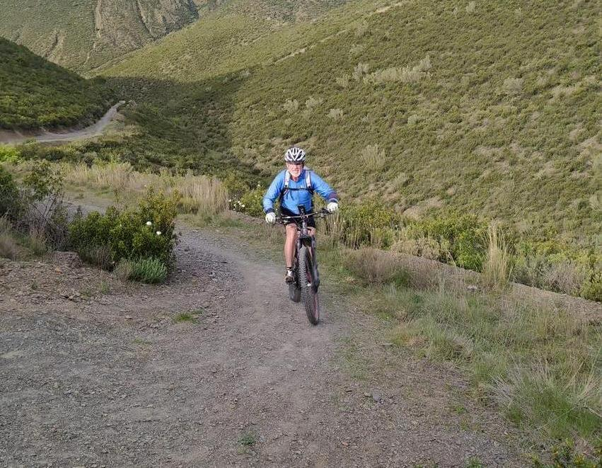
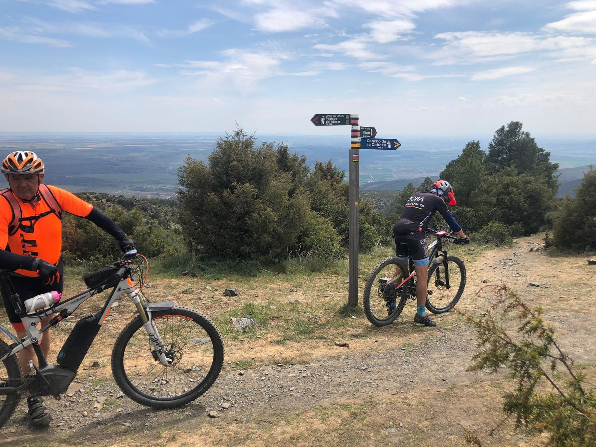
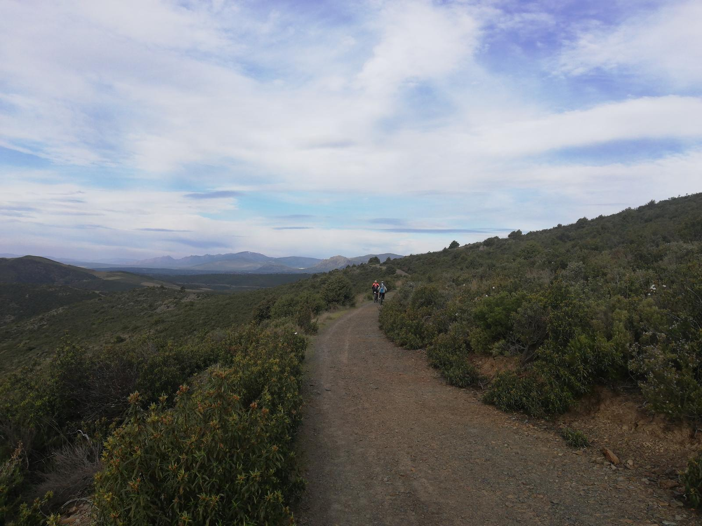
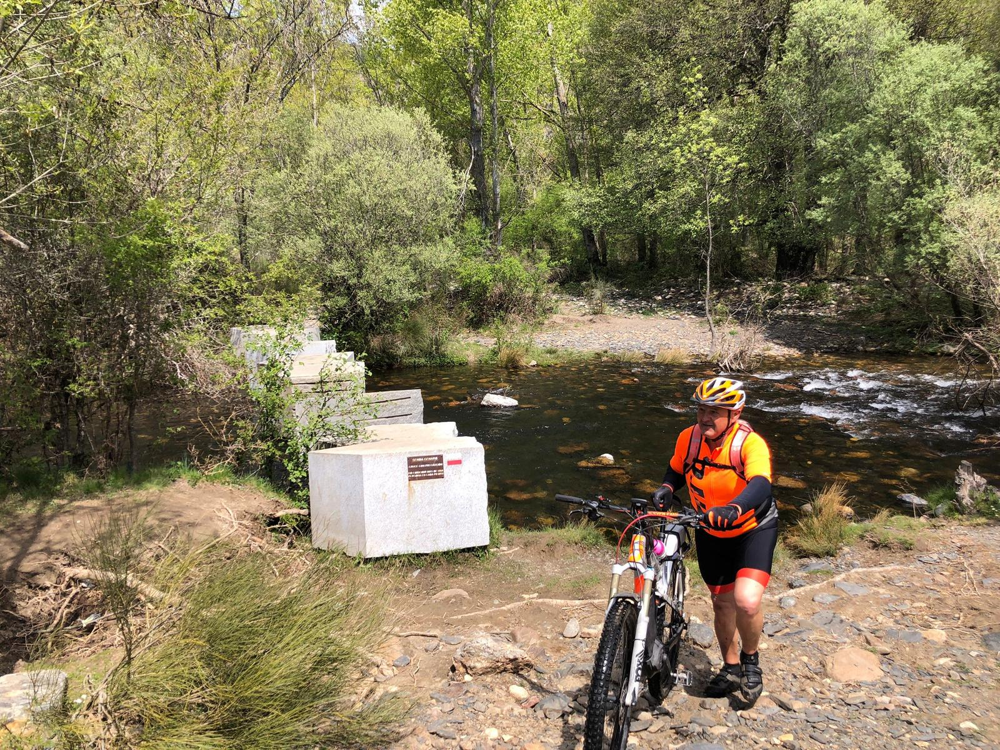
38,0 km · 3 horas · 1,200 m· 1,200 m
Una de las rutas más exigentes cerca de la capital. La subida desde La Vega pone a prueba la resistencia de cualquier ciclista. Vistas increíbles de la cordillera central.
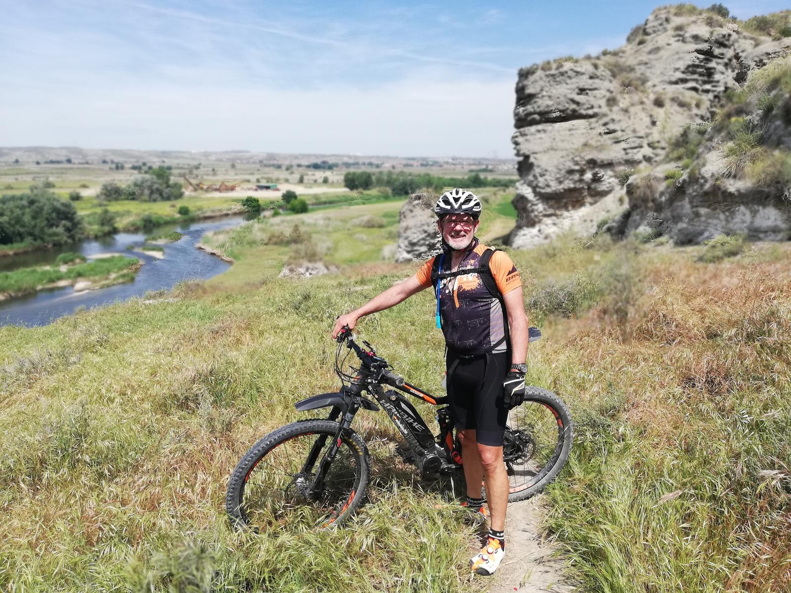
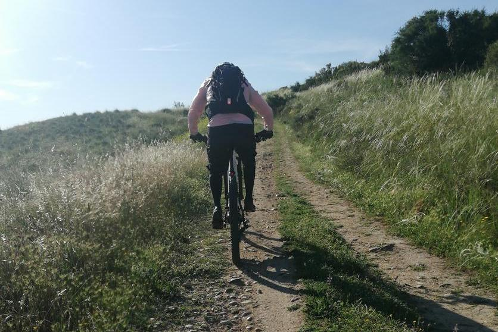
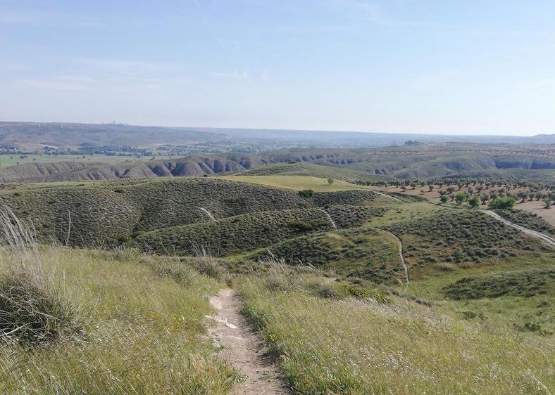
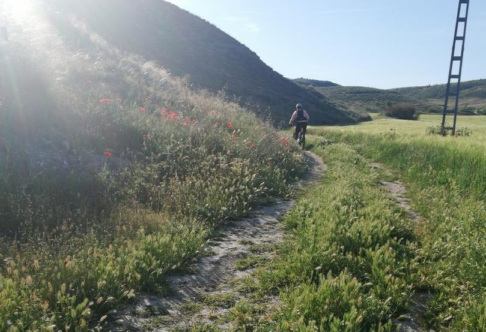
55,0 km · 3 horas 30 minutos · 650 m· 650 m
Ruta escénica ideal para disfrutar en grupo. Bordeando el embalse de Tominé y visitando el histórico pueblo de Guatavita. Terreno ondulado con vistas espectaculares.
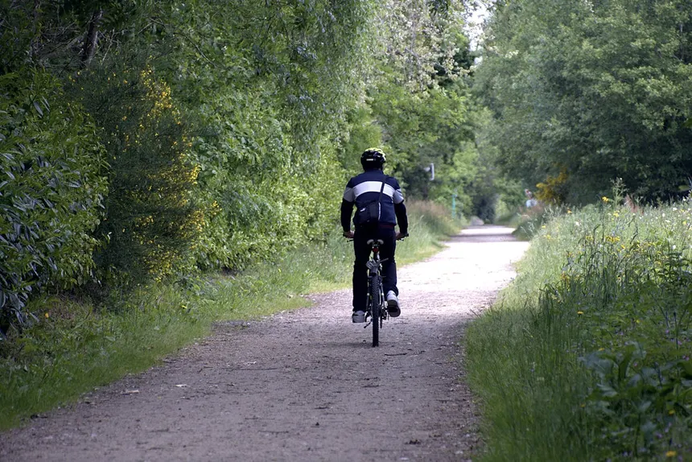


6.5 km · 30-45 minutos · 430 m · 10 m
Ruta de nivel medio. Es el ascenso obligado para cualquier ciclista en Bogotá. Una subida corta pero intensa que culmina con una vista de la sabana y un delicioso agua de panela.


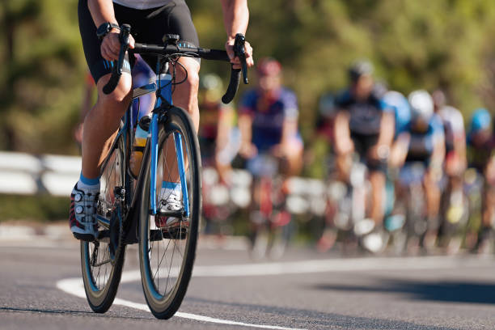
24,0 km · 2 horas 30 minutos · 550 m · 550 m
Ruta de nivel recreativo-medio. Recorrido por el corazón del Paisaje Cultural Cafetero. Disfruta de las palmas de cera y el mejor café del mundo mientras ruedas por Salento.